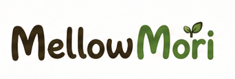
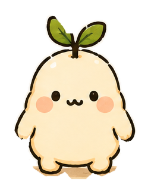
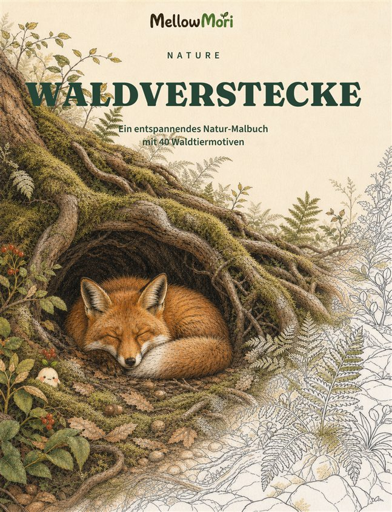
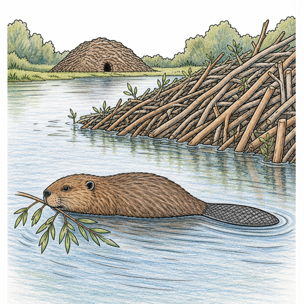
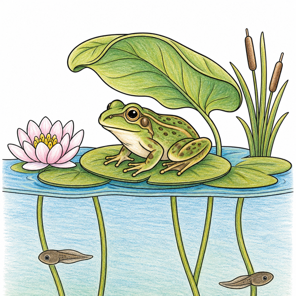
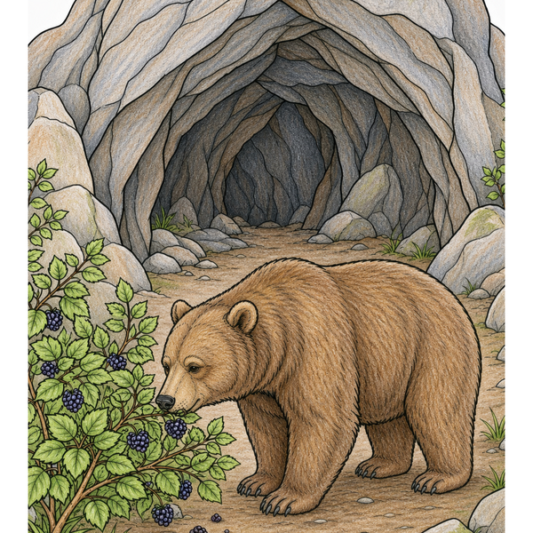

Nature
Die Natur genauer betrachten
Tiere und ihre Lebensräume stehen im Mittelpunkt ruhiger, detailreicher Ausmalwelten.
Nature entdecken
Durchdachte Malwelten
MellowMori verbindet Natur, Fantasie und die Freude am Entdecken in liebevoll gestalteten Malwelten für unterschiedliche Altersgruppen.
Bücher entdecken
Unsere Produktlinien
Nature
Tiere und ihre Lebensräume stehen im Mittelpunkt ruhiger, detailreicher Ausmalwelten.
Nature entdeckenLittle Worlds
Eine zukünftige Produktlinie für fantasievolle Miniaturwelten. Ein konkreter Titel wurde noch nicht zur Veröffentlichung angekündigt.
DemnächstMellowMori Nature
Glaubwürdige Tiere, natürliche Lebensräume und atmosphärische Szenen laden dazu ein, genauer hinzusehen und im eigenen Tempo zu gestalten.
Jetzt zuerst entdecken
MM‑001 eröffnet MellowMori Nature mit 40 originalen Waldmotiven – ruhig komponiert, naturverbunden und mit viel Raum für die eigene Farbwelt.

Deutsche Ausgabe
Ein entspannendes Natur-Malbuch mit 40 Waldtiermotiven
Demnächst verfügbarIm Buch



MellowMori Nature · MM‑002
DemnächstDie nächste Nature-Welt richtet den Blick unter die Meeresoberfläche. Weitere Produktdetails und ein Veröffentlichungstermin werden erst nach ihrer Freigabe ergänzt.
Mori ist ein kleiner Waldgeist, der ruhige Orte, die Natur und kleine Entdeckungsmomente liebt. Als Markenfigur von MellowMori begrüßt Mori gelegentlich neugierige Entdecker außerhalb der Malwelten.